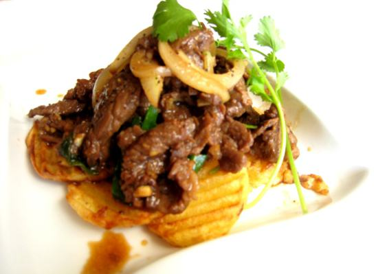

Cùng bắt tay làm thử thôi nào!
Nguyên liệu:
- 400g thịt bò
- 200g khoai tây
- 5 tép tỏi
- 1 củ hành tây
- Gia vị: hạt nêm, hạt tiêu, bột năng, nước mắm, dầu ăn
Cách làm:
- Thịt bò mua về rửa sach, thái miếng mỏng, dài khoảng 4cm.
- Ướp thịt bò với 1/2 thìa cà phê hạt nêm + 1/3 thìa cà phê hạt tiêu + 1 thìa súp nước mắm + 1/2 thìa súp dầu ăn, để khoảng 15 phút cho ngấm gia vị.
- Khoai tây đem gọt vỏ, chẻ khoai ra làm ba miếng dày khoảng 1cm, sau đó dùng dao răng cửa xắn ra thành từng miếng dày 1cm. Khi gọt khoai tây phải thả ngay vào nước lạnh để khoai không bị thâm đen. Sau đó vớt khoai ra rổ để ráo.
- Hành tây đem lột vỏ, bổ cau.
- Tỏi bóc vỏ, đập giập.
- Bắc chảo lên bếp, đun nóng cùng một chút dầu ăn, cho vào chảo 1 chút muối, cho khoai tây vào chảo chiên vàng.
- Sau khi chiên khoai tây xong, các bạn để khoai ra đĩa có lót giấy báo để thấm bớt dầu.
- Múc bớt dầu trong chảo ra, cho tỏi đã đập giập vào phi vàng. Khi tỏi vừa vàng vớt ra ngay. Đổ phần thịt bò đã ướp vào chảo, xào thật nhanh tay cho thịt chín tái đều. Khi thịt bò chuyển màu, cho hành tây vào chảo xào chung với thịt, nêm lại gia vị cho vừa ăn, ngay sau đó cho khoai tây đã chiên vào đảo nhanh tay khoảng 10 giây rồi tắt bếp, bắc ra.
- Bày thịt bò xào khoai tây ra đĩa, trang trí với rau thơm và dùng với cơm nóng nhé.
Chúc các bạn ngon miệng!